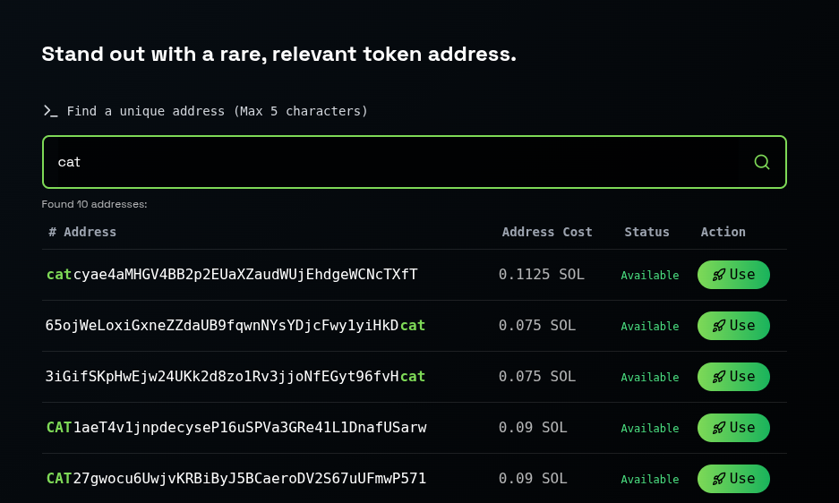
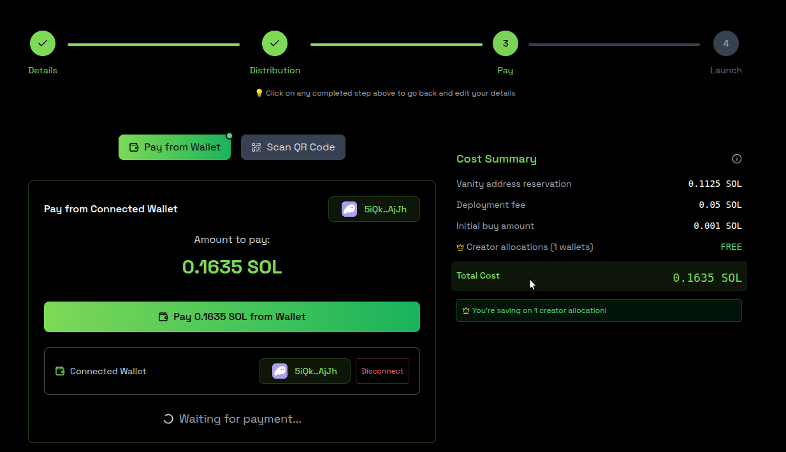
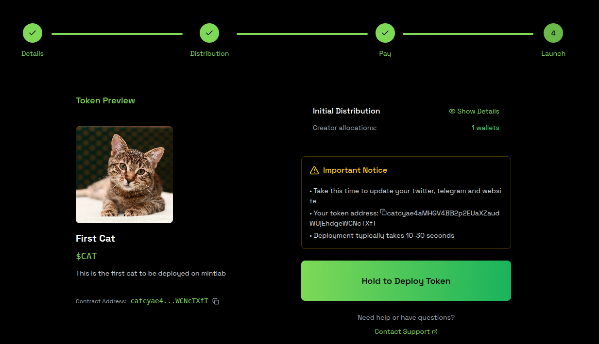

Fast address search
Seven-character addresses were available in under five minutes on one RTX 3090. The production system used a custom GPU kernel for longer searches.
Solana launch tooling · 2025–2026
A static look at the product I built for token creators: find a memorable Solana address, choose it, and take it through a launch flow.
Seven-character addresses were available in under five minutes on one RTX 3090. The production system used a custom GPU kernel for longer searches.
The product carried a creator from address selection through token details, distribution, payment, and deployment.
MintLab reached more than 100 deployments and 500+ followers before I wound it down when operating the marketing channel stopped making economic sense.
The product interactions and visual design are preserved here. Actions that could touch a wallet, make a payment, or deploy a token have been removed.


